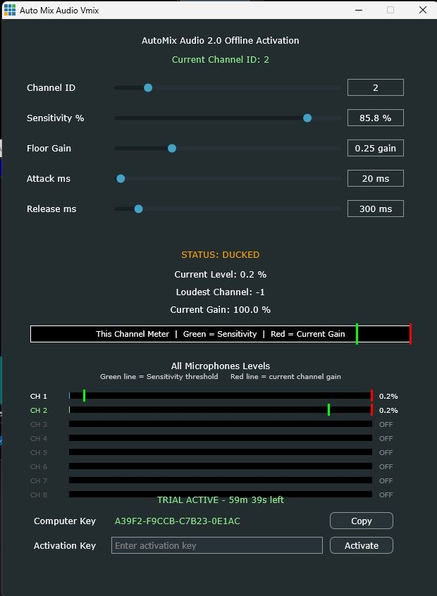

Automatyczna kontrola poziomów
Zarządzaj poziomami mikrofonów bez ręcznego wykonywania każdej korekty.
Automatyzacja mikrofonów w vMix
AutoMix jest projektowany do automatycznego zarządzania poziomami mikrofonów, aby rozmowy były wyraźniejsze, a miks dźwięku na żywo bardziej stabilny.

Założenie
AutoMix działa w sposób zbliżony do profesjonalnych automikserów audio. Zarządza poziomami mikrofonów, aby ograniczyć chaos w rozmowie i utrzymać bardziej spójny miks na żywo.
Zarządzaj poziomami mikrofonów bez ręcznego wykonywania każdej korekty.
Ułatw odbiór rozmowy, gdy w produkcji uczestniczy kilka mikrofonów.
Produkt powstaje z myślą o łatwej konfiguracji podczas realizacji na żywo.
AutoMix nie jest jeszcze dostępny do pobrania ani zakupu. Ta strona zostanie zaktualizowana po udostępnieniu produktu.
Pytania
Jest projektowany do automatycznego zarządzania poziomami mikrofonów podczas rozmów w vMix.
Dla realizatorów podcastów, paneli, wywiadów, webinarów i innych produkcji wykorzystujących kilka mikrofonów.
Nie. AutoMix ma obecnie status „dostępne wkrótce”.
Nie. Plugins For Live tworzy niezależne narzędzia do pracy z vMix.
Skontaktuj się z Plugins For Live, aby zapytać o AutoMix lub opisać sposób pracy, który chcesz zautomatyzować.